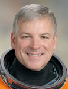

Lyndon B. Johnson Space Center
Houston, Texas 77058
|
National Aeronautics and Space Administration Lyndon B. Johnson Space Center Houston, Texas 77058 |
 |
Biographical Data |
||
Gregory H. Johnson (COLONEL, USAF, RET.)
NASA ASTRONAUT (FORMER)
PERSONAL DATA: Born on May 12, 1962, in South Ruislip, Middlesex, United Kingdom. Married to the former Cari M. Harbaugh of Lubbock, Texas. They have three children: Matthew, Joseph and Rachel. Considers Fairborn, Ohio, and Traverse City, Michigan, his hometowns. Recreational interests include traveling, biking, golfing, music, duplicate bridge and woodworking.
EDUCATION: In 1980, Johnson graduated from Park Hills High School in Fairborn, Ohio. He received his Bachelor of Science in Aeronautical Engineering from the U.S. Air Force Academy in 1984 and his Masters in Science in Flight Structures Engineering from Columbia University in 1985. In 2005, Johnson received his Masters of Business Administration from the University of Texas (Austin).
SPECIAL HONORS: 2012 NASA Exceptional Service Medal; NASA Space Medals (two); 2009 Rising Star Award - McCombs School of Business; 2005 Top Fox Safety Award; 2005 Dean’s Award for Academic Excellence - McCombs School of Business; NASA Superior Performance Awards; 1996 Lieutenant General Bobby Bond Award - Top U.S. Air Force Test Pilot; Distinguished Graduate, U.S. Air Force Test Pilot School, Class 94A; 1984 Distinguished Graduate with Honors - U.S. Air Force Academy; Eagle Scout. Military decorations: Legion of Merit, Distinguished Flying Cross, Meritorious Service Medals (two), and Air Medals (four).
MILITARY EXPERIENCE: A U.S. Air Force Academy graduate in May 1984, Johnson was designated as an Air Force pilot in May 1986 at Reese Air Force Base, Texas. He was retained as a T-38A instructor pilot at Reese until 1989. Johnson was next selected as an F-15E Eagle pilot in the 335th Fighter Squadron at Seymour Johnson Air Force Base, North Carolina. In December 1990, Johnson was deployed to Al Kharj, Saudi Arabia, flying 34 combat missions in support of Operation Desert Storm. In December 1992, he was again deployed to Saudi Arabia for 3 months, flying an additional 27 combat missions in support of Operation Southern Watch. In 1993, he completed Air Force Test Pilot School at Edwards Air Force Base, California. After graduation in 1994, he was assigned to the 445th Flight Test Squadron at Edwards Air Force Base, where he flew and tested F-15C/E, NF-15B and T-38A/B aircraft.
Johnson has logged over 5,000 flight hours in more than 50 different aircraft. He retired from the Air Force on February 1, 2009.
NASA EXPERIENCE: Selected by NASA in June 1998, Johnson reported for training in August 1998. After two years of initial astronaut training, Johnson was assigned to the Shuttle Cockpit Avionics Upgrade council, redesigning cockpit displays for future space shuttle missions. Johnson served as chief of shuttle abort planning and ascent procedure development. He was also a key player on several “tiger teams,” including the External Tank (ET) foam impact test team investigating the cause of the Columbia accident in 2003. This team proved that ET foam debris on ascent could critically damage the shuttle leading edge thermal protection system. Over the next five years, Johnson became the deputy chief and ultimately, the Chief of the Astronaut Safety Branch, focusing on all aspects of space shuttle, International Space Station and T-38 safety. In 2007, Johnson was selected to pilot Endeavour on the STS-123 mission that launched in March 2008. After he returned from the flight, Johnson served as a Capsule Communicator (CAPCOM) for STS-126, STS-119, STS-125 and STS-127. In 2009, he trained as pilot and primary robotic arm operator for STS-400, a contingency flight to rescue the crew of STS-125 (Hubble), but the rescue mission was not required. In May 2011, Johnson piloted Endeavour's final flight, STS-134. From October 2011 to November 2012, Johnson was appointed on a one-year detail as Associate Director of External Programs, Center Operations, at NASA Glenn Research Center in Cleveland, Ohio. There, he managed all public affairs, outreach and educational programs at NASA Glenn. After returning to JSC in late 2012, Johnson headed the visiting vehicles working group within the astronaut office, which helped plan, train and execute missions of Space X Dragon, Orbital Cygnus and JAXA HTV cargo vehicles to and from the International Space Station. In August 2013, Johnson departed NASA to accept a position as Executive Director, CASIS (Center for the Advancement of Science in Space).
SPACEFLIGHT EXPERIENCE: Johnson was pilot of STS-123 Endeavour (March 11 to March 26, 2008), the 25th shuttle/station assembly mission. Endeavour’s crew delivered the Japanese Experiment Logistics Module - Pressurized Section, the first pressurized component of JAXA’s Kibo Laboratory and the final element of the station mobile servicing system, the Canadian-built Dextre, also known as the Special Purpose Dextrous Manipulator. In addition to pilot duties aboard Endeavour, Johnson was a primary robotic arm operator, employing both the space shuttle and International Space Station robotic arms in support of numerous tasks throughout the mission. The STS-123 crew performed a record five spacewalks while docked to the station. The crew also delivered Expedition 16 Flight Engineer Garrett Reisman and returned to Earth with ESA’s Léopold Eyharts. The mission was accomplished in 250 orbits of the Earth, traveling more than 6 million miles in 15 days, 18 hours and 10 minutes.
Johnson was pilot of STS-134 Endeavour (International Space Station assembly flight ULF6) (May 16 to June 1, 2011), the penultimate mission of NASA’s Space Shuttle Program. The mission marked the final flight of space shuttle Endeavour. During the 16-day mission, Endeavour delivered the Alpha Magnetic Spectrometer (AMS) and spare parts, including two S band communications antennas, a high-pressure gas tank and additional spare parts for the Dextre robot. This was the 36th shuttle mission to the space station. During this mission, Johnson was the lead robotic arm operator for both the space shuttle and station robotic arms. His duties included installing the AMS and the Orbiter Boom Sensor System on the station, completing space station assembly. The STS-134 mission included four spacewalks and was completed in 15 days, 17 hours, 38 minutes and 23 seconds, traveling 6,510,221 miles in 248 Earth orbits.
AUGUST 2013